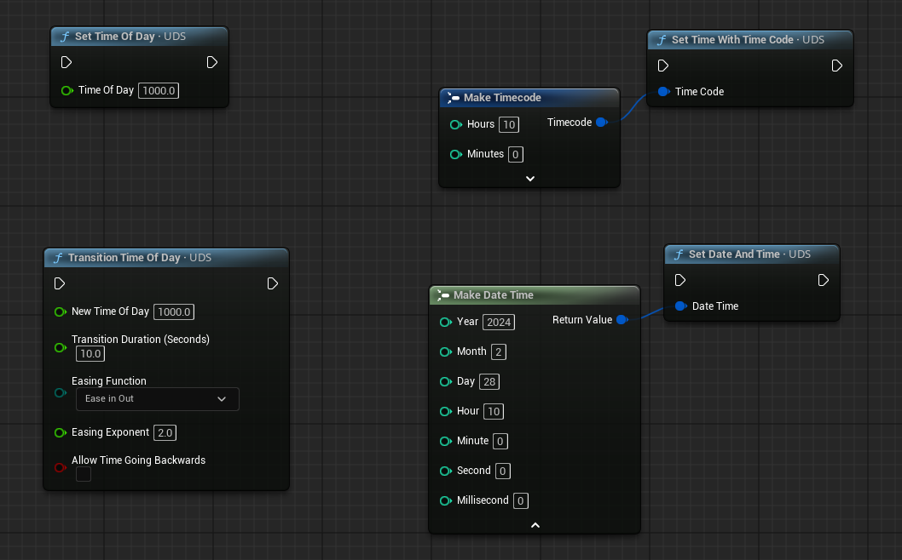
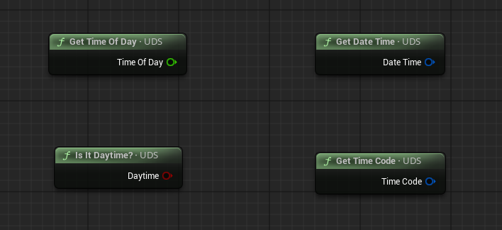
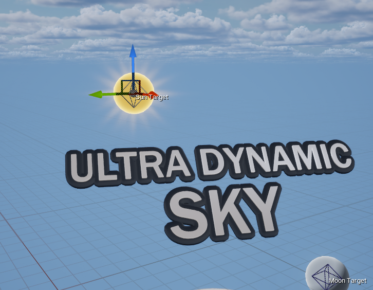

时间、日月与模拟
Time of Day 的驱动方式与蓝图函数、日月轨迹参数的调整、手动摆位，以及基于经纬度和日期的真实天文模拟。
时间控制
起始时间由 Basic Controls 里的 Time of Day 决定。也可以直接往
Time of Day String 里输入 3PM、15:45 这样的字符串来设置。
要让时间自己走起来，打开 Animate Time of Day 分类里的同名开关。开启后关卡运行期间时间会向前推进，
速度由 Day Length 与 Night Length 决定——两者单位是分钟，
表示从日出到日落、从日落到日出分别要经过多少真实时间。
如果 Simulation 分类里启用了 Simulate Real Sun，时间速度改由那里的
Simulation Speed 决定，上面两个时长不再生效。
运行时设置时间的四个函数
| 函数 | 说明 |
|---|---|
直接设置 Time of Day 变量 | 立刻跳到该时间。 |
Set Time with Time Code / Set Date and Time | 用引擎的 Time Code / Date Time 结构设置，按时、分、秒传值。 |
Set Time of Day With String | 用字符串设置，支持 12:34 PM、18:30、5AM 等常见写法，完整格式见函数说明。 |
Transition Time of Day | 让时间在指定时长内平滑过渡到目标值。适合“快速推进到某个时刻”的演出。 |

读取与显示时间
| 函数 | 输出 |
|---|---|
Get Time of Day | 直接给出时间浮点值，范围 0–2400。 |
Get Time Code | Time Code 结构，含时、分、秒。 |
Get Date Time | Date Time 结构，含时间与模拟日期。 |
Is It Daytime? | 布尔值，太阳在地平线以上时为真。只关心“白天还是晚上”时用它最省事。 |

想在界面上显示时间，UDS 自带两个时钟控件，在控件设计器的面板里搜索
Ultra Dynamic Sky Widgets 分类即可找到。
日月轨迹
不使用天文模拟时，日月在天空中的位置由下面几个参数推导而来，Sun 与 Moon 分类里各有一套：
| 参数 | 说明 |
|---|---|
Sun Yaw / Moon Yaw | 旋转整条环形轨迹，决定从哪个方向升起、落下。单位为度，顺时针为正。 |
Sun Pitch / Moon Pitch | 俯仰整条轨迹，让天体的最高点变低、偏离天顶。0 表示最高点会到达头顶。 |
Vertical Offset | 不考虑时间，直接把日月整体抬高或压低，可正可负。 |
Moon Orbit Offset | 仅月亮。控制月亮相对太阳的时间偏移。0 表示月亮与太阳轨迹相反：夜里升起、白天落下。 |
启用天文模拟后，上述参数全部失效（Manually Position 除外，它的优先级高于模拟）。
手动定位日月
也可以完全脱离时间，手动摆放日月的位置：
- 在
Sun分类勾选Manually Position Sun Target（月亮对应Manually Position Moon Target）。 - 选中 UDS，视口里会出现一个蓝色菱形的控件，标注为
Sun Target或Moon Target。 - 拖动这个控件即可改变日月方向——方向由 UDS Actor 指向该控件的位置决定。
控件背后控制的是两个向量变量 Sun Target 与 Moon Target，
在 Sun、Moon 分类的 Advanced 折叠区里可以找到，也可以直接用蓝图设置。

太阳外观
太阳是一张径向渐变，所以它的参数就是缩放、柔和度、颜色和强度。
Sun Scale 除了改变视觉大小，还会用来推导太阳平行光的光源角度，
从而让阴影的柔和度、高光的大小与太阳在天空中的尺寸匹配。想在这个计算值上再缩放，用
Sun Source Angle Scale。
太阳分类里还有 Solar Eclipse 相关设置，用来控制月亮或太空层里的天体挡在太阳前面时的表现。
月亮与月相
月亮默认支持月相渲染，用 Moon Phase 调整当前相位；也可以打开分类里的选项让月相随时间变化。
启用 Simulate Real Moon 时，月相由模拟计算。
月亮用两张纹理：
Moon Texture：月亮的 RGB 颜色与 alpha。Moon Phase Normal：包含月亮局部法线的 RGB 纹理，用于计算月相明暗。
如果想换成一张不需要月相的贴图（例如风格化的圆盘），把 Render Moon Phases 关掉即可。
真实天文模拟
Simulation 分类可以让日月星按真实世界坐标与日期定位。三个开关相互独立：
Simulate Real Sun、Simulate Real Moon、Simulate Real Stars。
-
开启日月模拟后，
Sun、Moon分类里所有定位与轨迹参数都会被覆盖（手动定位除外）， 并且会根据真实角直径自动设置Sun Scale与Moon Scale——这个联动可以在Simulation分类的高级选项里关掉。月相也由模拟控制。 -
开启星空模拟后，星星纹理从默认的可平铺星空贴图换成一张 360 度星空图。两张纹理都可以在
Stars分类里替换。
模拟位置由 Latitude、Longitude 决定；Time Zone 要填该地点正确的 UTC 偏移，
否则 Time of Day 会被按错误的地方时解释。也可以直接选一个城市预设，一次性套用纬度、经度、时区与夏令时设置。
年、月、日决定模拟日期。运行过程中，日期会在每天午夜自动前进一天。North Yaw
用来指定世界空间里哪个方向算“北”，单位为度、顺时针旋转，默认北方是 +X 方向。
关于精度
模拟公式主要参考 Jean Meeus《Astronomical Algorithms》中的常用算法。用天文年历数据对照测试， 太阳与月亮的误差约在 0.03 度。
月亮位置的精度取决于参与计算的项数，这项以 Moon Simulation Terms 暴露给用户，默认 10 项——
前几项已经能覆盖绝大多数实用场景，需要更高精度或更低开销时再自行调整。
模拟模式下的时间行为
- 启用
Animate Time of Day时，时间速度由Simulation Speed决定，1 大约是真实速度。 - 夏令时选项在
Simulation分类里，开启后会在高级设置指定的起止日期区间内按 DST 解释时间。 Use System Time会用系统时钟的 UTC 时间结合所选时区来设置时间与日期。这个功能不依赖其他模拟开关，单独也能用。